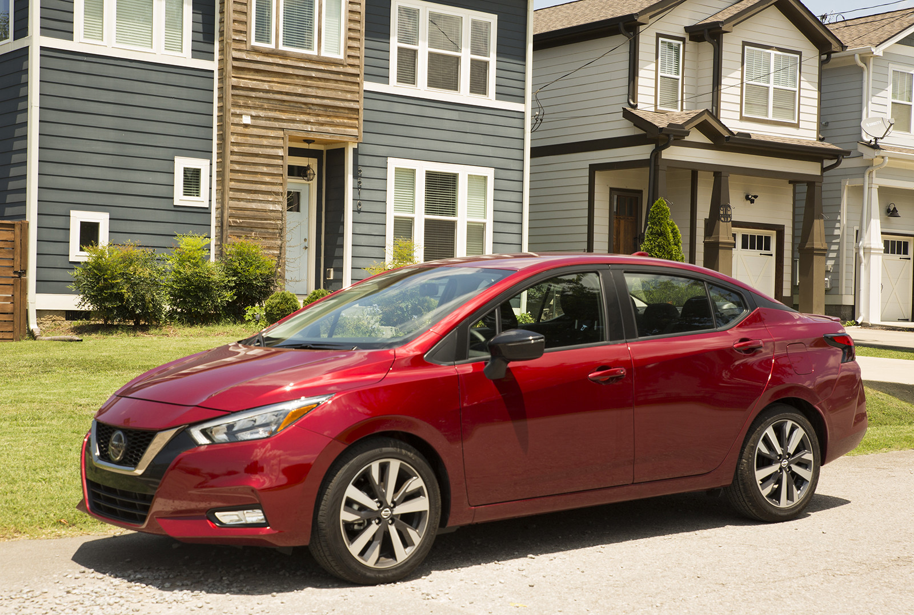
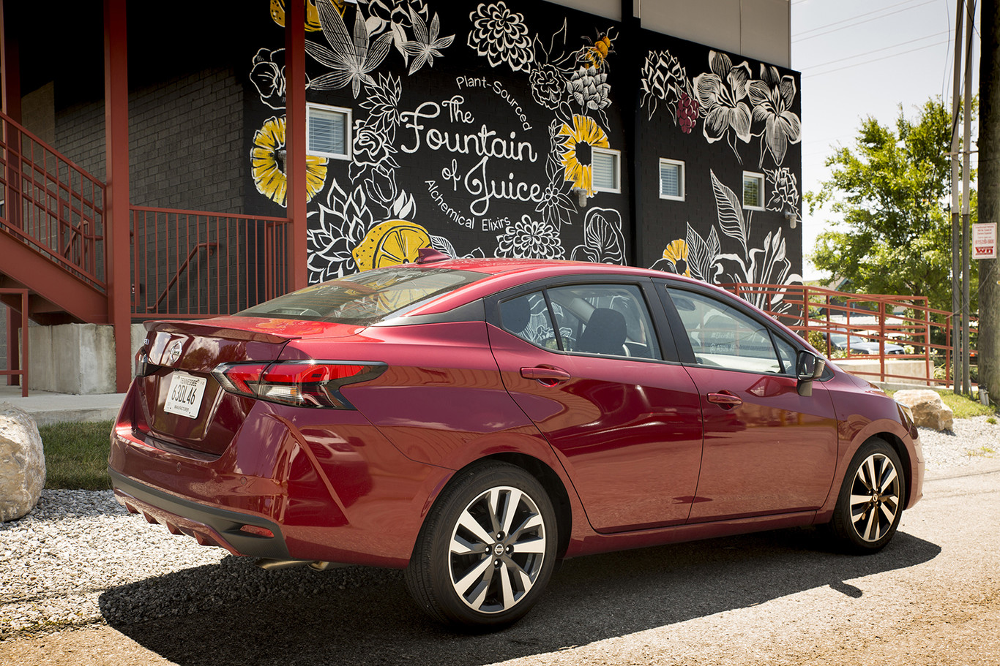
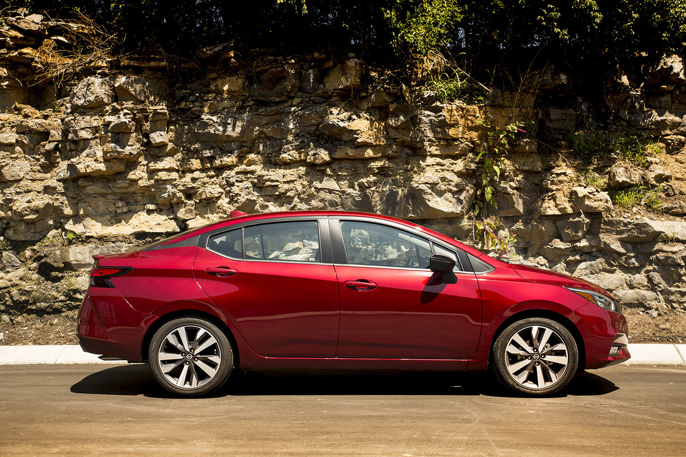
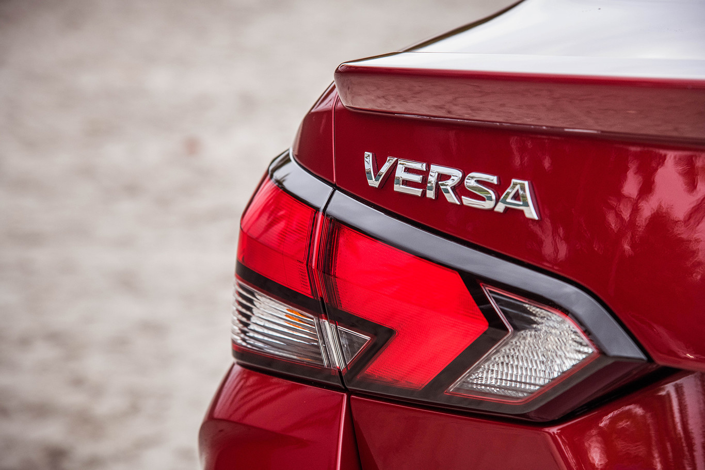
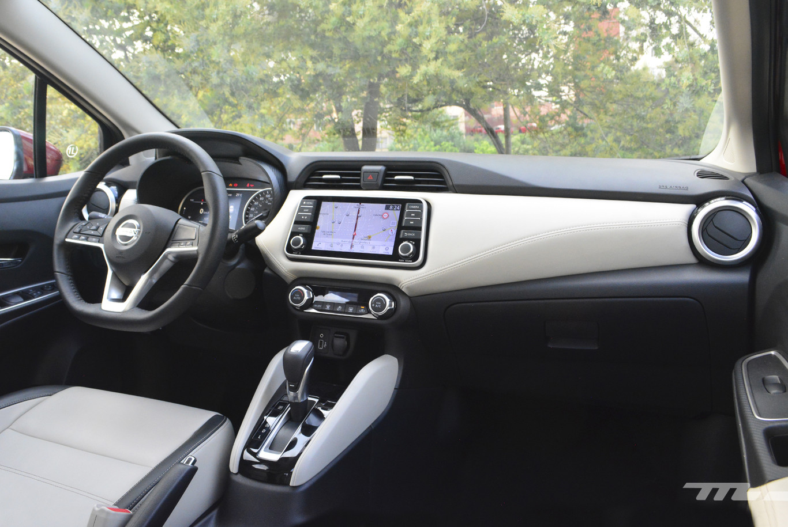

Nissan Versa 2020
Del sedán austero y de bajo costo que asocias con el nombre Versa ya no queda nada. El Nissan Versa 2020 se transforma en un auto mucho más preocupado por su apariencia, con una alta dotación de equipamiento y un nivel de seguridad inédito en su categoría. La hora de su lanzamiento en México ha llegado y Nissan nos confirma los precios.

La nueva generación recibe un diseño mejor proporcionado. Las líneas maestras del frente tienen como protagonista a la parrilla V-Motion que el Versa hereda de sus hermanos mayores, como Altima y Maxima. Estrena un techo de efecto flotante, calaveras en forma de búmeran y, según versiones, rines de hasta 17" y faros de LED.

Una de las grandes mejoras del nuevo modelo es la seguridad. Todas las versiones incluyen frenos ABS, control electrónico de estabilidad y seis bolsas de aire; el tope de gama suma alerta de colisión frontal con freno autónomo de emergencia, monitor de punto ciego, cámara de visión de 360º y alerta de tráfico cruzado trasero.

En lo que respecta a equipamiento, desde la versión base incluye reproductor de música, controles de audio al volante, aire acondicionado, computadora de viaje, sensor de reversa, llave inteligente y equipo eléctrico. Conforme se escale en la gama se puede sumar cuadro de instrumentos digital, infotenimiento con pantalla de 7", navegación, tapicería en piel, climatizador automático, entre otros.

Aunque conserva la plataforma del modelo anterior, el Versa 2020 pasó por un meticuloso proceso de revisión. El motor fue actualizado por un bloque de 1.6 litros de 118 hp y 110 lb-pie, asociado a una transmisión manual de cinco velocidades o un cambio automático CVT con modo Sport. Según la marca, el rendimiento de combustible en ciudad es de 16.4 km/l para el manual y 20.6 km/l para el CVT.

Con esta sólida oferta de equipamiento, seguridad y estilo, el Nissan Versa 2020 busca plantar cara a modelos como Volkswagen Vento y Virtus, KIA Rio, Hyundai Accent, Mazda 2, Ford Figo, Honda City, entre otros. A continuación te presentamos el detalle de equipamiento y precios de cada versión:
Nissan Versa Sense TM - $239,900
Nissan Versa Advance TM - $270,000
Añade sobre Sense:
Nissan Versa Exclusive CVT - $304,500
Añade sobre Adavance:
Nissan Versa Platinum CVT - $304,500
Añade sobre Exclusive: